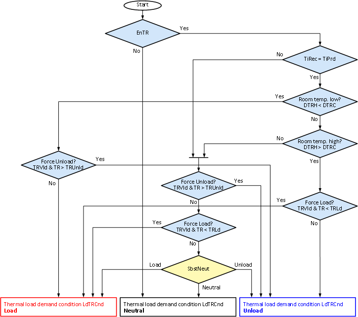
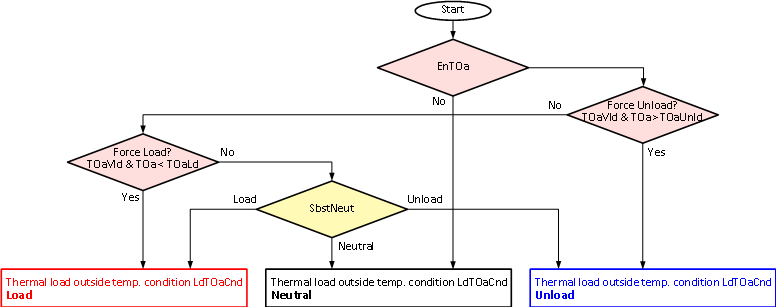
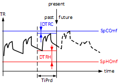

[THLOAD] 热负荷分析
功能块 THLOAD 借助供暖和制冷需求信号以及室内和室外温度来计算房间或区域的热负荷状态。
THLOAD 借助供暖和制冷需求信号以及室内和室外温度来计算房间或区域的热负荷状态。
THLOAD 具有以下功能：
- Continuous logging of heating demand [HDmd], cooling demand [CDmd], room temperature [TR], the room temperature comfort setpoints [SpHCmf], and [SpCCmf] for time period [TiPrd] (floating time period). Logging is done at a fixed interval of 15 minutes.
- Determination of recent heating demand [RctHDmd], recent cooling demand [RctCDmd], and the number of demand changes [DmdChg] within the time period [TiPrd]. [RctHDmd] and [RctCDmd] are set based on the minimum demand time [TiMinDmd].
- Calculation over the time period [TiPrd], the minimum room temperature difference for heating [DTRH], between room temperature [TR] and heating setpoint Comfort [SpHCmf] as well as minimum room temperature difference for cooling [DTRC] between the cooling setpoint Comfort [SpCCmf] and room temperature [TR].
- Calculation of the thermal load condition [ThLdCnd]. THLOAD can use the inputs [EnDmdCal], [EnTRCal], and [EnTOaCal] to specify whether the thermal load condition is based on demand signals, room temperature and/or outside temperature.
THLOAD 按照以下步骤计算：
Step 1:将输入信号限制在合理的值范围内，特别是：
- The minimum demand time [TiMinDmd] is limited to ≤ [TiPrd].
- The room temperature limit for forcing unloads [TRUnld] is limited to ≥ [TRLd].
- The outside temperature limit for forcing unloads [TOaUnld] is limited to ≥ [TOaLd].
Step 2:计算过去一段时间的供热需求[TiPrd]:
- The time period for recent heating demand [TiHDmd] is calculated, i.e., the time within [TiPrd], during which [HDmd] = 1.
- If [TiHDmd] ≥ [TiMinDmd], the recent heating demand is set to [RctHDmd] = 1.
Step 3:计算过去时间段的制冷需求[TiPrd]:
- The time period for recent cooling demand [TiCDmd] is calculated, i.e., the time within [TiPrd], during which [CDmd] = 1.
- If [TiCDmd] ≥ [TiMinDmd], the recent cooling demand is set to [RctCDmd] = 1.
Step 4:确定供暖最小室温差[DTRH] 室温 [TR] 和供暖设定点舒适度 [SpHCmf] 在过去的时间段内 [TiPrd] 期间 [TRVld] = 1:
- [DTRH] is positive if [TR] was always greater than [SpHCmf] during [TiPrd] (for times when [TRVld] = 1).
- [DTRH] is negative if [TR] was at least once less than [SpHCmf] during [TiPrd] (for times when[TRVld] = 1).
- If [TRVld] = 0 during the entire period [TiPrd], [DTRH] is set to = 3.402822E+38.
Step 5:确定冷却最小室温差[DTRC] 制冷设定点舒适度之间 [SpCCmf] 和室温 [TR]，在过去的时间段内[TiPrd]，对于 [TRVld] = 1:
- [DTRC] is positive if [TR] was always less than [SpCCmf] during [TiPrd] (for times when [TRVld] = 1).
- [DTRC] is negative if [TR] was at least once greater than [SpCCmf] during [TiPrd] (for times when [TRVld] = 1).
- For [TRVld] = 0 during the entire period [TiPrd], [DTRC] is set to = 3.402822E+38.
Step 6:计算热负荷条件。
Thermal load demand condition
热负荷需求条件[LdDmdCnd] 表示仅基于加热和冷却需求信号的负载条件（对于 [EnDmdCal] = 1)。计算请参见：

Thermal load room temperature condition
热负荷条件室温[LdTRCnd] 表示仅基于室温的负载条件（对于 [EnTRCal] = 1)。计算请参见：

Thermal load outside temperature condition
热负荷条件室外温度[LdTOaCnd] 表示仅基于外部温度的负载条件（对于 [EnTOaCal] = 1)。计算请参见：

Thermal load condition
热负荷条件[ThLdCnd] 表示基于加热和冷却需求信号的总负载条件（对于 [EnDmdCal] = 1), 室温（对于 [EnTRCal] = 1)，以及室外温度（对于 [EnTOaCal] = 1)。计算请参见：

Determine number of demand changes [DmdChg]
对于图示的示例，[DmdChg] = 3:

一段时间内供暖和制冷需求变化的次数[TiPrd] 在输出处提供 [DmdChg]。当供暖和制冷需求阶段之间不存在供暖或制冷需求时，它还会计算变化。如果供暖和制冷需求同时存在，则每 15 分钟算作一次需求变化。
Determine room temperature differences heating and cooling [DTRH]/[DTRC]
下图显示了过去的室温舒适设定点和过去的室温之间的温度差异。

为简单起见，图中舒适的室温设定点是恒定的。如果设定点在时间段 [TiPrd].
Calculation of thermal load condition demand [LdDmdCnd]

热负荷需求条件[LdDmdCnd] 表示仅基于加热和冷却需求信号的负载条件（对于 [EnDmdCal] = 1)。为了 [EnDmdCal] = 0, [LdDmdCnd] 设置为中性或 [SbstNeut]. [LdDmdCnd] 用于借助当前和过去的供暖和制冷需求信号来估计热负荷状况。通常使用最后 24 小时（[TiPrd] = 24 小时）：
- This demand is supported and set to [LdDmdCnd] = Load, if within [TiPrd] only heating demand exists ([RctHDmd] = 1, [RctCDmd] = 0).
- This demand is supported and set to [LdDmdCnd] = Unload, if within [TiPrd] only cooling demand exists ([RctHDmd] = 0, [RctCDmd] = 1).
- Demand is unclear and [LdDmdCnd] = Neutral if within [TiPrd] neither heating nor cooling demand exists ([RctHDmd] = 0, [RctCDmd] = 0).
- THLOAD distinguishes various cases if within [TiPrd] both, heating and cooling demand, exist ([RctHDmd] = 1, [RctCDmd] = 1)
- If present demand is only heating ([HDmd] = 1, [CDmd] = 0), the present demand is supported and [LdDmdCnd] = Load.
- If present demand is only cooling ([HDmd] = 0, [CDmd] = 1), the present demand is supported and [LdDmdCnd] = Unload.
- If [EnDmdChg] = 0 and no present demand exists for either heating or cooling demand, it is set to [LdDmdCnd] = Neutral.
- If [EnDmdChg] = 1 and no present demand exists for heating or cooling, [LdDmdCnd] is set based on demand changes: if [DmdChg] = 0 or [DmdChgExpt] = 1 or [TiRec] < [TiPrd], it is set to [LdDmdCnd] = Neutral. Otherwise, it is assumed that the upcoming demand corresponds to the opposite of the last demand (demand changes alternately between heating and cooling) and [LdDmdCnd] is set accordingly.
DmdChgExpt – 需求变化计算的例外情况：
- Both heating as well as cooling demand within the same 15 minutes during [TiPrd]
- Phases with no demand between heating demand phases during [TiPrd]
- Phases with no demand between cooling demand phases during [TiPrd]
Calculation of thermal load condition room temperature [LdTRCnd]
热负荷条件室温[LdTRCnd] 表示仅基于室温的负载条件 [TR] （为了 [EnTRCal] = 1)。为了 [EnTRCal] = 0, [LdTRCnd] 设置为中性或 [SbstNeut]. [LdTRCnd] 用于借助过去的室温来预测热负荷状况。通常使用最后 24 小时（[TiPrd] = 24 小时）：
- [LdTRCnd] = Load if the room temperature [TR] is valid ([TRVld] = 1), and less than [TRLd]
- [LdTRCnd] = Unload if the room temperature [TR] is valid ([TRVld] = 1), and greater than [TRUnld]
- [LdTRCnd] = Unload if the room temperature (during valid phases) is in the upper comfort range ([DTRH] > [DTRC]).
- [LdTRCnd] = Load if the room temperature (during valid phases) is in the lower comfort range ([DTRH] < [DTRC]).
Calculation of thermal load condition outside temperature [LdTOaCnd]
热负荷状态室外温度[LdTOaCnd] 表示仅基于外部温度 [TOa] 的负载条件（对于 [EnTOaCal] = 1).
为了 [EnTOaCal] = 0, [LdTRCnd] 设置为中性或 [SbstNeut]. [LdTOaCnd] 借助外部温度 [TOa] 估计热负载条件。以下规则（另请参见图表）适用于外部温度迟滞 [TOaHys] = 0:
- For [TOaVld] = 0, [LdTOaCnd] is set = [SbstNeut].
- For [TOaVld] = 1 and [TOa] ≤ [TOaLd], [LdTOaCnd] is set to = Load.
- For [TOaVld] = 1 and [TOa] ≥ [TOaUnld], [LdTOaCnd] is set to = Unload.
- For [TOaVld] = 1 and [TOaLd] < [TOa] < [TOaUnld], where [LdTOaCnd] is set to = [SbstNeut].
从强制状态负载到中性状态的转变 [TOaLd] + [TOaHys本章介绍硬删除设备的工作流程。该设备已从系统中完全删除。TOaHys] > 0 并且从强制状态卸载到中性状态的转变发生在 [TOaUnld] - [TOaHys].
外部温度 [TOa] 的选择可能因应用而异，例如：
- The actual outside temperature used for the heating curve function
- The average of the outside temperature of a past time period
- The present measured outside temperature
- A forecast value for outside temperature, e.g., from weather service
Calculation of thermal load condition [ThLdCnd]
热负荷条件[ThLdCnd] 表示基于加热和冷却需求信号的负载条件（对于 [EnDmdCal] = 1), 室温（对于 [EnTRCal] = 1)，以及室外温度（对于 [EnTOaCal] = 1). [ThLdCnd] 团结各州[LdDmdCnd], [LdTRCnd]， 和 [LdTOaCnd] 在一种状态下。
通过室温阈值强制[TRLd] 和 [TRUnld] 具有最高优先级，其次是强制外部温度阈值 [TOaLd] 和 [TOaUnld]. [ThLdCnd如果室温和室外温度在阈值之内，则由加热和冷却需求确定。
如果[期间没有加热或冷却需求TiPrd], [ThLdCnd] 根据室温确定 [TR] 及其舒适度设定点。

[TR] 和相关的 [TRVld], [SpHCmf]， 和 [SpCCmf] 以 15 分钟的间隔进行轮询和记录。热负荷计算基于记录的数据。由于室温阈值而强制热状态基于最后存储的 [TR] 值。
输入 | 描述 | 数据类型 | 默认值 |
|---|---|---|---|
EnFnct | Enable function 启用该功能。 | 布尔值 | 1 |
0 - 该功能被禁用。 | |||
|
TiPrd | Time period for heating 该函数考虑该时期的滑动过去时间范围内的数据（需求信号和室温信号）。默认值为 24 小时，最大值为 72 小时。 | 时间 | 1d 0...3d |
|
SbstNeut | Substitution value 如果后续应用程序功能无法处理中性状态，则可以替换热状态。 | 整数 | 3 = 中性 |
1：负载 | |||
|
EnDmdCal | Enable demand calculation | 布尔值 | 1 |
0 - 热负荷条件的计算不考虑加热和冷却需求信号。 | |||
|
EnDmdChg | Enable demand changing logic | 布尔值 | 1 |
0 - 如果需求在 [TiPrd]变化，不计算未来需求，即[LdDmdCnd] 设置 = 中性或 [SbstNeut]. | |||
|
CDmd | Cooling demand 当前房间或区域的制冷需求。 | 布尔值 | 0 |
0 - 房间或区域不需要冷却。 | |||
|
HDmd | Heating demand 当前房间或区域的供暖需求。 | 布尔值 | 0 |
0 - 房间或区域不需要供暖。 | |||
|
TiMinDmd | Minimum time duration for demand account 该时间用于计算最近的需求：
| 时间 | 15m 0...3d |
|
EnTRCal | Enable room temperature calculation | 布尔值 | 1 |
0——热负荷工况计算不考虑室温。 | |||
|
TR | Room temperature | 真实的 | 20.0 [°C] 0.0…50.0 [°C] |
|
TRVld | Valid room temperature | 布尔值 | 1 |
0 - 室温无效，即不能用于计算热负荷条件。 | |||
|
SpCCmf | Cooling setpoint for comfort 舒适操作模式的室温冷却设定点。 | 真实的 | 24.0 [°C] 0.0...50.0 [°C] |
|
SpHCmf | Heating setpoint for comfort 舒适操作模式的室温加热设定值。 | 真实的 | 21.0 [°C] 0.0...50.0 [°C] |
|
TRLd | Room temperature to force load 如果室温有效且小于 [TRLd]，则热负载条件将强制进入负载状态。它优先于使用外部温度限制 [TOaLd] 和 [TOaUnld] 的力。 | 真实的 | 15.0 [°C] 0.0…50.0 [°C] |
|
TRUnld | Room temperature to force unload 如果室温有效且大于[，则热负载条件强制卸载状态TRUnld]。它优先于使用外部温度限制的力[TOaLd] 和 [TOaUnld]. | 真实的 | 35.0 [°C] 0.0…50.0 [°C] |
|
EnTOaCal | Enable outside air temperature calculation | 布尔值 | 0 |
0 - The calculation of thermal load condition does not consider outside temperature. | |||
|
TOa | Outside temperature | 真实的 | 20.0 [°C] -50.0…80.0 [°C] |
|
TOaVld | Outside air temperature valid | 布尔值 | 1 |
0 - 外部温度无效，即不能用于计算热负荷条件。 | |||
|
TOaHys | Outside temperature for switching hysteresis 阈值 [TOaLd] 和 [TOaUnld] 的迟滞可防止根据外部温度偏差频繁切换热负载条件。 | 真实的 | 0.5 [K] 0.0…10.0 [°K] |
|
TOaLd | Outside air temperature to force load 如果外部温度有效且小于 [TOaLd]，则热负载条件将强制进入负载状态。它的优先级低于使用室温限制 [TRLd] 和 [TRUnld] 的强制。 | 真实的 | 0.0 [°C] -50.0…80.0 [°C] |
|
TOaUnld | Outside air temperature to force unload 如果外部温度有效且大于[，则热负载条件强制卸载状态。TOaUnld]。它的优先级低于使用室温限制的强制[TRLd] 和 [TRUnld]. | 真实的 | 30.0 [°C] -50.0…80.0 [°C] |
|
Reset | Reset | 布尔值 | 0 |
0 - 正常模式 | |||
输出 | 描述 | 数据类型 | 默认值 |
|---|---|---|---|
|
ThLdCnd | Thermal load condition 热负荷条件表示房间或区域的热负荷，同时考虑：
| 整数 | 3 = 中性 |
1：负载 | |||
|
LdDmdCnd | Thermal load demand condition 热负荷条件表示在单独考虑过去的供暖和制冷需求的情况下房间或区域的热负荷。 | 整数 | 3 = 中性 |
1：负载 | |||
|
LdTRCnd | Thermal load room temperature condition 热负荷室温条件表示在单独考虑过去室温的情况下房间或区域的热负荷。 Note:计算基于记录的数据。 | 整数 | 3 = 中性 |
1：负载 | |||
|
LdTOaCnd | Thermal load outside air temperature condition 室外空气温度条件的热负荷表示在单独考虑室外温度的情况下房间或区域的热负荷。 | 整数 | 3 = 中性 |
1：负载 | |||
|
RctCDmd | Recent cooling demand | 布尔值 | 0 |
0 - [ 内的冷却需求时间总和TiPrd] 小于 [TiMinDmd]. | |||
|
RctHDmd | Recent heating demand | 布尔值 | 0 |
0 - [ 内的供热需求时间总和TiPrd] 小于 [TiMinDmd]. | |||
|
TiCDmd | Time of recent cooling demand [ 内的冷却需求时间总和TiPrd]. | 时间 | 0s |
|
TiHDmd | Time of recent heating demand [ 内的供热需求时间总和TiPrd]. | 时间 | 0s |
|
DmdChg | Number of recent demand changes 计算 [TiPrd] 内加热和冷却需求之间的所有需求变化。更改以 15 分钟为间隔进行计数。 Note:如果在 15 分钟间隔内同时存在供暖和制冷需求，则这将被视为需求变化。 | 整数 | 0 |
|
DTRC | Room temperature difference cooling 对于 [TRVld] = 1 的时间，[TiPrd] 内的最小差值 {[SpCCmf] – [TR]}。
| 真实的 | 20.0 [K] |
|
DTRH | Room temperature difference heating Minimum difference {[TR] – [SpHCmf]} within [TiPrd], for times when [TRVld] = 1.
| 真实的 | 20.0 [K] |
|
TiRec | Time of recorded data
| 时间 | 0s |
|
SysUnits | System of units 表示system of units由块使用。 | 整数 | 1: International system of units (SI) (fallback) 1...5 |
1: International system of units (SI) (fallback) | |||
ErrCode | Error code indication | 整数 | 0: No error |
= 0 - No error | |||
THLOAD is intended for use in HVAC applications which include systems that support heating and cooling where operation is (nearly) free of charge. Such systems include blinds or energy recovery units in a ventilation plant.
如果应用程序中有加热和冷却需求，则可以将 THLOAD 配置为使用它们的值。如果加热和冷却需求不可用，则仍可以使用 THLOAD 并禁用需求计算。
Energy efficient blinds control
节能百叶窗控制通常用于无人居住的房间或建筑物。百叶窗控制有助于最大限度地减少 HVAC 系统（例如散热器或冷冻天花板）的加热和冷却需求。
例如，THLOAD 可以配置如下：
- [TiPrd] = 24hr: Considers the previous day.
- [SbstNeut] = Unload: If neutral is not supported, this state is replaced with unload.
- [EnDmdCal] = 1, [EnDmdChg] = 0, [TiMinDmd] = 15min: Recent heating and cooling demand is considered (continuing for at least 15 minutes). For changing heating and cooling demand within [TiPrd], a future demand is not anticipated.
- [EnTRCal] = 1, [TRLd] = 18 °C, [TRUnld] = 30 °C: Room temperature is considered. Force of load and unload takes place at the appropriate room temperatures.
- [EnTOaCal] = 1, [TOaLd] = 12 °C, [TOaUnld] = 26 °C, [TOaHys] = 1 K: The outside temperature is considered. Force of load and unload takes place at the appropriate outside temperatures.
THLOAD 的输入可以按如下方式互连：
- [CDmd] and [HDmd] are interconnected with the heating and cooling demand signals for the room or zone.
- [TR] is interconnected with the room temperature. It can be a filtered room temperature.
- [TRVld] is interconnected with the validity of the room temperature measurement. [TRVld] is eventually set to = 0 for exceptions, e.g., open windows (detected by window contacts).
- [TOa] is interconnected with the outside temperature or a filtered outside temperature.
- [TOaVld] is interconnected with the validity of the outside temperature measurement.
输出[ThLdCnd如果需要节能百叶窗控制，可以使用 THLOAD 的 ] 来控制百叶窗位置，例如，如下：
- If thermal load state is equal to load, blinds take advantage of solar radiation during the day (i.e., open blinds as much as possible) and prevent heat flow from the room to the environment during the night (i.e., close blinds as much as possible).
- If thermal load state is equal to unload, blinds prevent solar radiation during the day (i.e., close blinds as much as possible) and permit heat flow from the room to the environment at night (i.e., open blinds as much as possible).
Energy-efficient control of energy recovery in ventilation plants
通风设备中能量回收的节能控制可用于例如带有旁路阻尼器的绕行盘管或板式热交换器。目标是通过控制能量回收来最大限度地减少热量或冷却需求。例如，THLOAD 可以配置如下：
- [TiPrd] = 24hr: Considers the previous day.
- [SbstNeut] = Neutral: Supports the state neutral.
- [EnDmdCal] = 1, [EnDmdChg] = 1, [TiMinDmd] = 15min: Recent heating and cooling demand is considered (continuing for at least 15 minutes). For changing heating and cooling demand within [TiPrd], a future demand is anticipated.
- [EnTRCal] = 0, [TRVld] = 0: Room temperature is not considered.
- [EnTOaCal] = 0, [TOaVld] = 0: The outside temperature is not considered.
THLOAD 的输入可以按如下方式互连：
- [CDmd] and [HDmd] are interconnected with heating and cooling demand signals of active heating and cooling elements in the ventilation plant (e.g., heating or cooling registers). Additional heating and cooling demand signals can eventually be considered from other heating and cooling equipment (e.g., radiators in the rooms) acting on the room ventilated by the ventilation plant.
输出 [ThLdCndTHLOAD 的 ] 可用于控制能量回收的送风温度设定点，例如，如下：
- The supply air temperature setpoint for energy recovery is set to the heating supply air temperature setpoint if the thermal load state is equal to load.
- The supply air temperature setpoint for energy recovery is set to the cooling supply air temperature setpoint if the thermal load state is equal to unload.
- The supply air temperature setpoint for energy recovery is set to the average of the heating supply air temperature setpoint and cooling supply air temperature setpoint if the thermal load state is equal to neutral.
Night cooling with mechanical ventilation
如果可以利用夜间相对较冷的室外空气对建筑物进行预冷，则采用机械通风进行夜间冷却会非常有效。然而，设置夜间制冷的控制功能很困难：通常不清楚夜间制冷何时比白天制冷更有利。特别是夜间降温，不应进行不必要的降温。例如，THLOAD 可以配置如下：
- [TiPrd] = 24hr: Considers the previous day.
- [SbstNeut] = Neutral: Supports the state neutral.
- [EnDmdCal] = 1, [EnDmdChg] = 0, [TiMinDmd] = 15min: Recent heating and cooling demand is considered (continuing for at least 15 minutes). For changing heating and cooling demand within [TiPrd], a future demand is not anticipated.
- [EnTRCal] = 1, [TRLd] = 18 °C, [TRUnld] = 30 °C: Room temperature is considered. Force of load and unload takes place at the appropriate room temperatures.
- [EnTOaCal] = 0, [TOaVld] = 0: The outside temperature is not considered.
THLOAD 的输入可以按如下方式互连：
- [CDmd] and [HDmd] are interconnected with heating and cooling demand signals for active heating and cooling elements of the ventilation plant (e.g., heating and cooling registers) as well as additional heating and cooling demand signals from heating and cooling equipment (e.g., chilled ceilings in the rooms) acting on rooms ventilated by the ventilation plant.
- [TR] is interconnected with the room temperature. It may be a filtered room temperature.
- [TRVld] is interconnected with the validity of the room temperature measurement. In addition, [TRVld] is set to = 0 during the period for night cooling and then some more time, e.g., 1 hour.
输出[ThLdCnd] for THLOAD 可以用作夜间冷却的条件：
- Night cooling is enabled if the thermal load state is equal to unload. Additional conditions must be met for night cooling, e.g., using function block NGTC.
- Night cooling is not enabled if the thermal load state is not equal to unload.